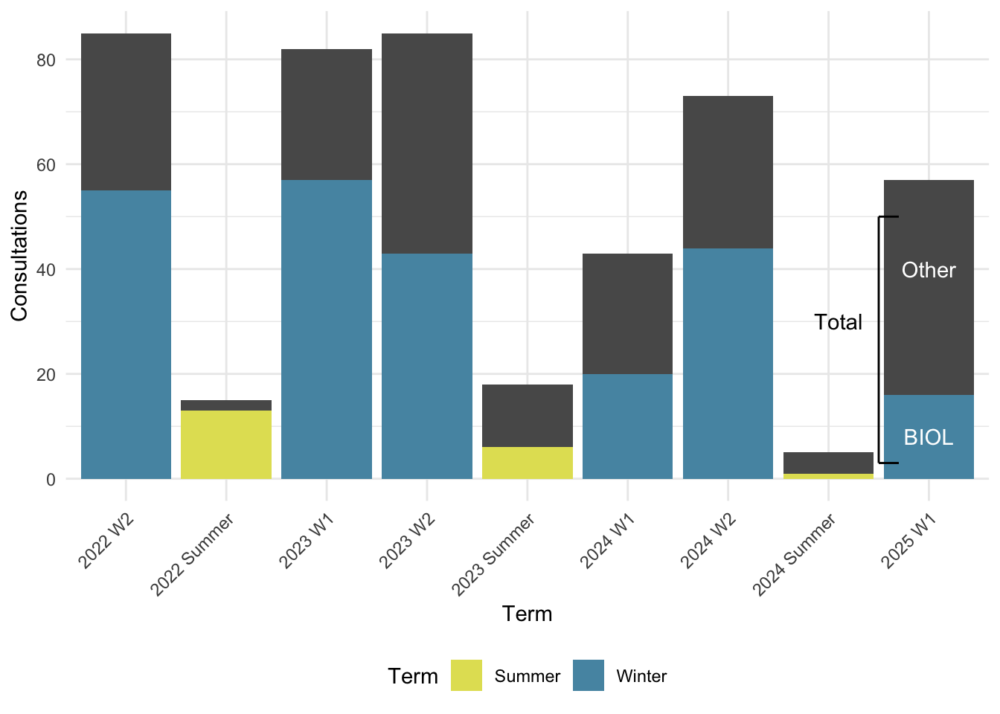
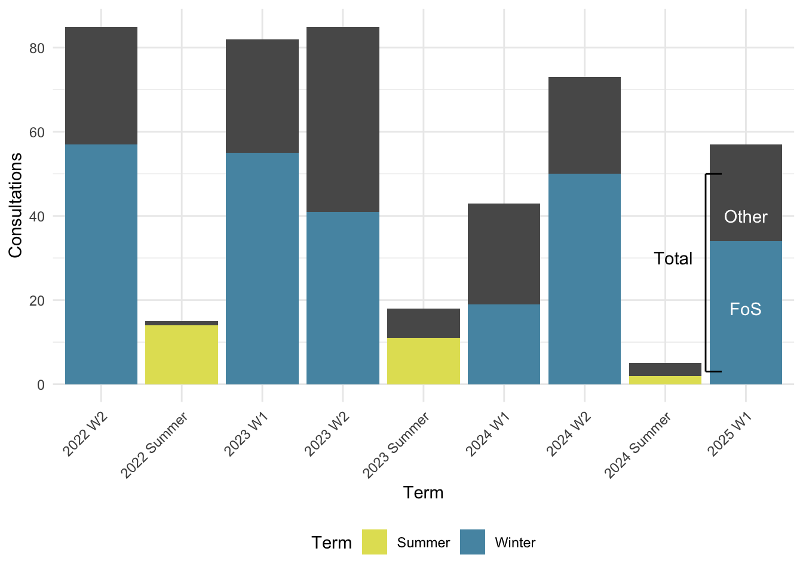
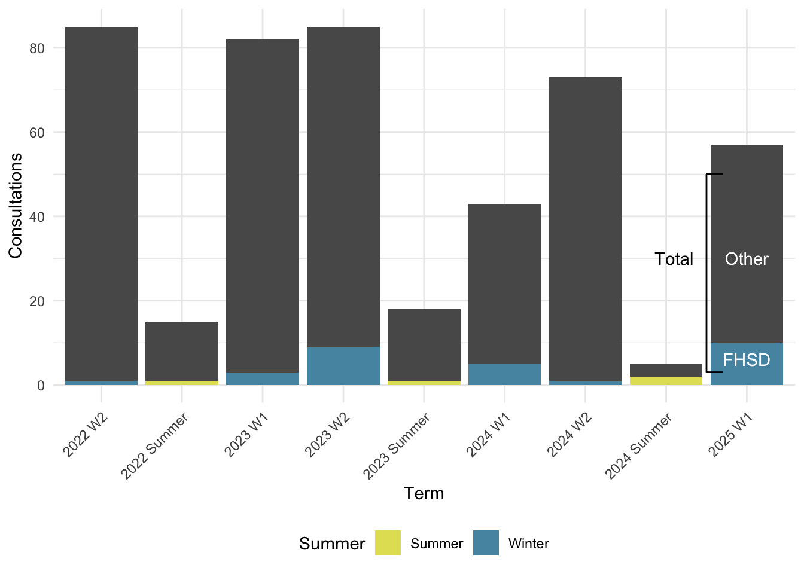

| Faculty | Count |
|---|---|
| Irving K. Barber Faculty of Science | 283 |
| Irving K. Barber Faculty of Arts and Social Sciences | 59 |
| NA | 48 |
| Faculty of Health and Social Development | 33 |
| Faculty of Medicine SMP | 12 |
| Interdisciplinary Graduate Studies | 12 |
| School of Engineering | 10 |
| Okanagan School of Education | 3 |
| Faculty of Management | 2 |
| Faculty of Creative and Critical Studies | 1 |
Consultations
Date Range
January 1, 2023 - December 31, 2025
Faculty Numbers
Department Numbers
| Department | Count |
|---|---|
| Biology | 255 |
| NA | 66 |
| EESC | 22 |
| Economics | 19 |
| Health and Exercise Sciences | 19 |
| Nursing | 18 |
| Psychology | 17 |
| Engineering | 12 |
| Chemistry | 9 |
| Urban and Regional Studies | 7 |
| IGS | 6 |
| Mathematics | 5 |
| Sustainability | 4 |
| Computer Science | 2 |
| Statistics | 2 |
Role Numbers
| Role | Count |
|---|---|
| Masters | 222 |
| Undergraduate | 89 |
| PhD | 84 |
| NA | 33 |
| Staff | 18 |
| Faculty | 17 |
Reaons for Requesting a Consultation
| Purpose | Count |
|---|---|
| Building or applying a statistical model | 64 |
| Writing code | 50 |
| Selecting an appropriate statistical model | 48 |
| Interpreting my findings | 41 |
| Data visualization | 36 |
| Troubleshooting my code | 36 |
| Selecting and appropriate statistical model | 13 |
| Other | 7 |
Department and Faculty Porportions
Biology

FoS

FHSD
